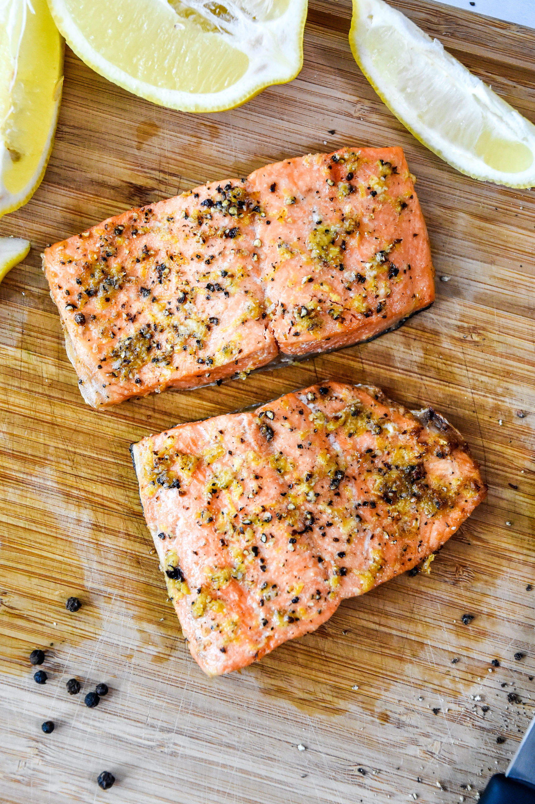

Lemon Pepper Salmon
Home

Description
Salmon with lemon and pepper. I like this quite a bit! If salmon were cheaper- and we went to the store on a more regular basis- I'd have this weekly.
Ingredients
- Salmon Fillet
- Lemon Juice
- Butter
- Salt
- Black Pepper
- Garlic Powder
- Olive Oil
Prep Materials
- Bowl to mix sauce in
- Large cast iron pan to cook fillet in
- Plate to hold fillet between seasoning and cooking
Directions
- Preheat oven to 350.
- Melt butter in sauce bowl, whisk in lemon juice, salt and pepper, and garlic powder.
- Set each fillet into sauce to soak, then move to plate.
- Heat olive oil in pan on stovetop, then cook fillets in it for about 1 minute, to sear the outside.
- Move the pan into the preheated oven to cook until the salmon flakes easily with a fork, about 10 to 12 minutes.
Suggested Sides
[Unfinished...]